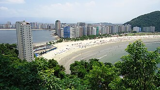
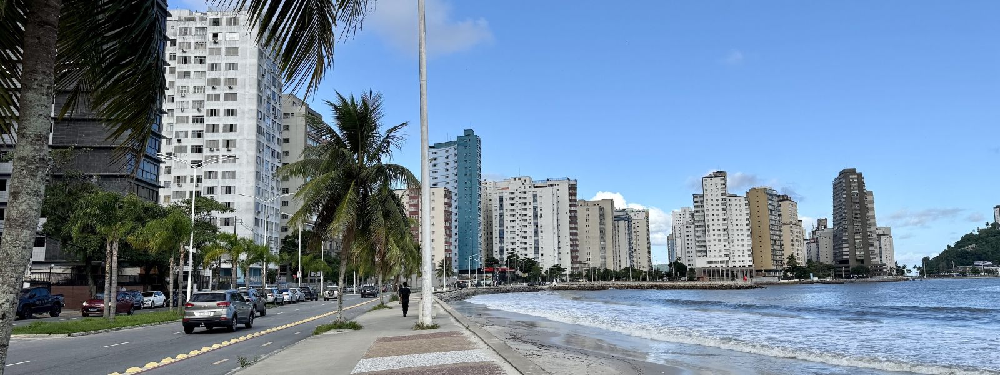

São Vicente é uma cidade marcada pela história, pela cultura e pelas belezas do litoral paulista. Considerada a primeira vila oficial do Brasil, reúne importantes monumentos históricos, praias, ilhas e paisagens naturais. Sua história e suas atrações fazem dela um dos municípios mais importantes da Baixada Santista.
Conheça a história, a importância e as riquezas naturais e culturais que fazem São Vicente única.
São Vicente possui grande importância histórica para o Brasil por ser considerada a primeira vila oficial do país, fundada em 1532. Além de seu patrimônio histórico, a cidade tem relevância turística e econômica na Baixada Santista, com atividades ligadas ao comércio, aos serviços, à pesca e ao turismo.
São Vicente está localizada no litoral do estado de São Paulo, na região da Baixada Santista, a aproximadamente 70 km da capital paulista. O município possui áreas na Ilha de São Vicente e em território continental, sendo banhado pelo Oceano Atlântico.
São Vicente é considerada a primeira vila oficial do Brasil, fundada por Martim Afonso de Sousa em 22 de janeiro de 1532; A cidade abriga a famosa Ponte Pênsil, inaugurada em 1914; Também possui a tradicional Biquinha de Anchieta, um dos seus principais marcos históricos.
A economia de São Vicente é baseada principalmente no comércio, nos serviços, no turismo e na pesca. Sua proximidade com Santos e com o complexo portuário da região também favorece as atividades comerciais, o transporte e a geração de empregos.
São Vicente atrai visitantes com a Ilha Porchat, a Ponte Pênsil, a Biquinha de Anchieta e suas praias, como Itararé e Gonzaguinha. A cidade também oferece o Teleférico, o Mirante Niemeyer e o Parque Ecológico Voturuá, reunindo opções históricas, culturais e de lazer.
São Vicente possui praias, manguezais, áreas de Mata Atlântica e ambientes costeiros que abrigam diferentes espécies de animais e plantas. Essas áreas naturais contribuem para a biodiversidade regional e possuem importância para a preservação ambiental da Baixada Santista.
Descubra alguns dos destinos que valem a visita em São Vicente.
| Localização | Atração | Indicação | Nota dos visitantes |
|---|---|---|---|
| Centro | Brisamar Shopping | Compras e entretenimento | 9,0/10 |
| Centro | Biquinha de Anchieta | História e cultura | 8,4/10 |
| Centro | Praia do Gonzaguinha | Praia e lazer | 8,6/10 |
| Ilha Porchat | Mirante Niemeyer | Paisagens e fotografia | 9,2/10 |
| Itararé | Praia de Itararé | Praia e esportes | 8,6/10 |
| Voturuá | Parque Ecológico Voturuá | Natureza e lazer | 8,6/10 |
| Centro | Boulevard Shopping | Compras e entretenimento | 8,4/10 |
| Itararé | Clube de Voo Livre do Litoral Paulista | Esportes e paisagens | 9,4/10 |
| Praia dos Milionários | Praia dos Milionários | Praia e tranquilidade | 8,8/10 |